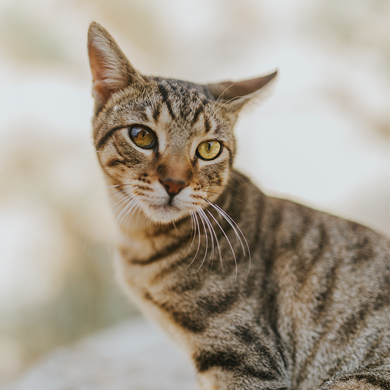

Animal Care Volunteer
Feed, walk, and socialize dogs and cats at our adoption center. Shifts are about two hours long.
There is more than one way to change a pet's life. Explore our programs below and find the one that fits you best.
Filter by how you want to help and when you are free, then save the opportunities that interest you. Your saved list is remembered on this device and fills in our interest form for you.

Foster families provide a safe, temporary home for pets recovering from illness, too young for adoption, or needing a break from the shelter. Fosters typically care for a pet for two to eight weeks.

Feed, walk, and socialize dogs and cats at our adoption center. Shifts are about two hours long.
Help set up events, greet visitors, and introduce potential adopters to our pets.
Drive animals to veterinary appointments, foster homes, and adoption events.
Represent the rescue at community fairs and help spread the word about our mission.
Ready to help? Submit a volunteer or foster interest form.